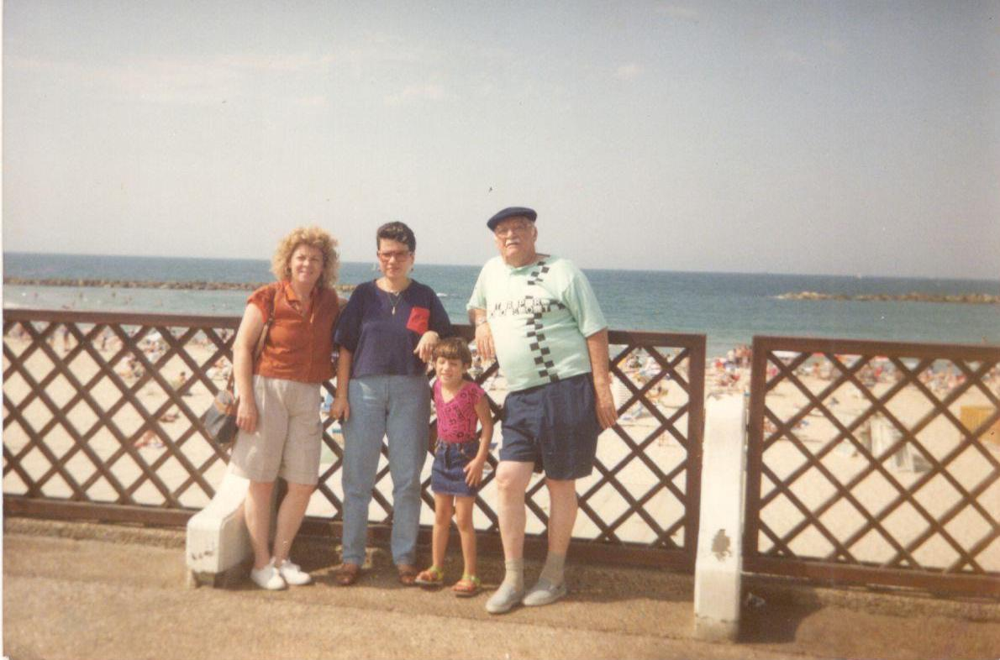

Ancestros
de mi Abuela Sarina
Mi
abuela no sabe mucho de sus antepasados, pero estuvo dispuesta a
contarme lo que sabía sobre sus padres.
Jose
(Joseph Arie, en hebreo) Avram, nació el 4 de diciembre de 1922 en
Iasi, Rumania. Hijo de Marcos (Mordejai) Avram y Sara Goldemberg, los
dos oriundos del mismo lugar. De sus abuelos no sabe mucho, pero sabe
que su abuelo Marcos compraba y vendía aluminio y que tenían una
buena posición económica. Tuvieron 7 hijos: Tzili y Saúl, hermanos
morochos son los mayores, y les siguen; Moris, Lupu, Efraim (Fraike);
quien murió siendo tan solo un pequeño niño, José (mi bisabuelo)
y Sheli. Existía 20 años de diferencia entre los morochos y la más
chiquita de los hermanos. Todos ellos, menos Sheli se casaron y
tuvieron hijos en Rumania, pero deciden emigrar en el año 1946.
Rumania
era un país muy antisemita por tradición y tenemos conocimiento de
pogromos que acontecieron en la zona. La mitad de los judíos de
Rumania fueron asesinados durante la Segunda Guerra Mundial. Pero en
esta historia únicamente uno fue asesinado en manos de los nazis; Mi
tío bisabuelo Saúl (el morocho de Tzili). Cuenta mi abuela, que mi
bisabuelo José estaba por casarse y por lo tanto su hermano Saúl
viajó a Bucarest para comprar unas telas para confeccionar los
trajes de la boda y estando allá llegó un camión y empezó a
disparar, y mi tío muere. Aparentemente fue una emboscada.
Mi
bisabuelo trabajó como policía en Iasi hasta 1941, año en el que
ocurrió un espantoso pogromo, específicamente el 29 de junio. Este
día hubo muchos tiroteos c ontó mi bisabuelo José, estaban
asesinando a muchas personas, por lo que escondieron a las mujeres de
la familia en el ático. En la matanza, perdieron la vida varias
miles de personas el número exacto se desconoce, quizá alrededor de
ocho mil judíos. A los hombres de la ciudad (los que seguían con
vida) los deportaron para llevarlos a campos de trabajo. Entre ellos
estuvo mi bisabuelo. El traslado al campo se llevó a cabo vía tren,
los pusieron en vagones de ganado y donde cabían 100 o 120 personas,
introducían a 300 o 400. El tren iba de pueblito en pueblito y la
gente moría ahogada. El tren debía parar en las aldeas para sacar a
los cadáveres y ahí los enterraban en fosas comunes. Mi bisabuelo
José logró escapar en una de esas paradas, ya que al abrir las
puertas y al caer los cadáveres él se hizo caer entre los muertos,
se escondió entre los cadáveres y cuando vio la oportunidad se
escapó.
ontó mi bisabuelo José, estaban
asesinando a muchas personas, por lo que escondieron a las mujeres de
la familia en el ático. En la matanza, perdieron la vida varias
miles de personas el número exacto se desconoce, quizá alrededor de
ocho mil judíos. A los hombres de la ciudad (los que seguían con
vida) los deportaron para llevarlos a campos de trabajo. Entre ellos
estuvo mi bisabuelo. El traslado al campo se llevó a cabo vía tren,
los pusieron en vagones de ganado y donde cabían 100 o 120 personas,
introducían a 300 o 400. El tren iba de pueblito en pueblito y la
gente moría ahogada. El tren debía parar en las aldeas para sacar a
los cadáveres y ahí los enterraban en fosas comunes. Mi bisabuelo
José logró escapar en una de esas paradas, ya que al abrir las
puertas y al caer los cadáveres él se hizo caer entre los muertos,
se escondió entre los cadáveres y cuando vio la oportunidad se
escapó.
Después
del pogromo de Iasi las autoridades Rumanas no aceptaron ningún tipo
de persecución en contra de los judíos. Mi bisabuelo regresó. Cómo
llega de vuelta a su ciudad y logra conocer ahí a su futura esposa y
casarse, lo desconocemos. Seguro fue una historia fascinante, sin
embargo, a mi bisabuelo no le gustaba hablar del tema. Así que me
queda imaginarme una historia romántica en la que vio a mi bisabuela
y se dijo “Esa será la mujer con la que pasaré el resto de su
vida” o tal vez fueron amigos de chiquitos y fueron creciendo y ya
no se veían tanto como amigos y decidieron probar salir como “algo
más” y así fueron enamorándose o tal vez simplemente fue un
matrimonio arreglado, aunque lo dudo, pues ellos no venían de
familias religiosas. La realidad es que se casa con Dora Hershkovitz
el 3 de diciembre de 1944.
Dora
(Dvora) Hershkovitz era hija de Jaim Hershkovitz y Fanny (Feigel)
Wolf.
Mi
Tátara abuelo Jaim, nacido en Rumania, de hecho estuvo casado antes
con otra señora (lamentablemente desconocemos su nombre) y tuvo
cuatro hijos con ella: Lea y Shlomo (que eran morochos), Paula,
Joseph y Pinjas. Por un tiempo se fueron a Estados Unidos pero por
alguna razón que desconocemos se regresaron a Rumania, donde su
esposa falleció. Al cabo de un tiempo conoce a Fanny (Feigel) Wolf
oriunda de Polonia. Su familia queda en Polonia y mueren asesinados
durante la Shoah, únicamente sobreviven ella y una hermana.
Jaim
y Fanny tuvieron a Dvora (Dora), Rubén, Sara y Rajel. Todos ellos se
casan en Rumania y finalmente emigran a Israel.
Volviendo
a la historia de amor entre mis bisabuelos, un año después de
casarse nace su primer hijo quien a las pocas horas lamentablemente
fallece. El 28 de diciembre de 1946 nace su segundo hijo; Israel
(Sorel) en Rumania y a los pocos meses salen de su ciudad natal rumbo
a Israel.
La
travesía la realizaron a pie, atravesando varios países de Europa.
Mi abuela Sarina recuerda que su papá le contó que en el camino él
era quien cargaba a su hijo Sorel y que de repente alguien tropezó
con algo y cuando se voltea a ver que era, resultó ser un bebe. Ese
era mi tío abuelo, a mi bisabuelo se le había resbalado, pues lo
llevaba tipo canguro aguantado por una tela y no se dio cuenta que lo
había dejado caer (así de cansado habrá estado). Al llegar a
Alemania deciden parar la travesía por un tiempo y nace mi abuela
Sarina el 3 de septiembre de 1948. A los pocos meses (tres meses) en
diciembre se embarcan hacia Israel.
En
Israel llegan a una Maabara (pueblo de tránsito en el que se vivía
en carpas). Ya parte de la familia se encontraba en Israel. Se
asentaron en Ranana, en donde mi bisabuelo José trabajó manejando
un camión de cerveza y mi bisabuela Dora trabajó muy duro limpiando
en un hospital de tuberculosis, entre otros trabajos.
Tiempo
después se mudan a una casita pequeña con un baño compartido con
otra casa contigua que era idéntica a la de ellos. El jardín era
muy grande. Un día de Janucá la bisabuela estaba friendo Sufganiot
(dulce típico de la festividad) y escuchó llorar a la pequeña
Sarina. Dejó el sartén caliente sobre la estufa y su hijo Sorel
quien tenía mucho antojo de dulce, fue a meter la mano en la sartén,
la cual cayó sobre él. Se fueron de urgencia al hospital, donde lo
retuvieron en emergencia. El niño no paraba de llorar y su papá
quería verlo, pero no se lo permitían. Mi bisabuelo logró entrar a
emergencias y se robó a su hijo, pues no le gustaba el trato de
aquel hospital.
Como
dato curioso, años más tarde mi tío Sorel se fue a vivir a Israel,
lamentablemente enfermó de Cáncer y falleció. Los médicos
asomaron la posibilidad que tal vez el Cáncer fue ocasionado por las
radiaciones que le aplicaron para curar las quemaduras cuando era
niño. Su esposa fue al hospital donde lo trataron de niño y al
pedir los registros de su esposo, para su sorpresa el registro
arrojaba que el niño había fallecido. El hospital tuvo que de
alguna manera justificar la desaparición de mi tío y por eso lo
declararon muerto.
Otra
anécdota que involucra a su hijo Sorel fue que en una ocasión, él
le dijo a su mamá que se iba al parque pero término yendo a la
playa y se quedó dormido allí y se insoló, pues él era muy
blanco. Llegó un soldado y al verlo en ese estado se lo llevó a la
policía y cuando mi bisabuela fue a buscarlo no se lo querían
devolver porque no sabían si era de ella y decían que no lo había
cuidado bien.
Ahora
bien Tzili, la hermana de mi bisabuelo José, quien estaba casado con
Jacobo Greemberg habían inmigrado a Cali, Colombia, pues el hermano
de su esposo llamado Berco, (quien más tarde se casa con Sheli, la
hermana menor de mi bisabuelo) ya estaba ahí. Y así es como llegan
mis Tátara abuelos Jaim y Sara con Sheli a Colombia, posteriormente
traen a José, Dora y sus hijos.
Mi
Bisabuelo trabajó vendiendo telas de casa en casa, luego tuvieron
una panadería y trabajaron haciendo catering en el club hebreo.
Por
su parte al morir mi tátara abuelo Jaim de un infarto, mi tátara
abuela Sara monta un restaurante con su hija menor Sheli, hasta que
ésta se casa y su esposo ya no quiere que trabaje, así que cierran
el restaurante y Sara se muda a vivir con Sheli y su esposo Berco,
hasta que muere un 28 de diciembre de 1959.
En
los años 70 José y Dora se mudan a Caracas ya que sus hijos (ya los
dos casados y con hijos) vivían aquí y deciden pasar el resto de
sus vidas acompañados de sus seres queridos.
Montaron
una fábrica de vestidos de dama en el centro de Caracas. Al cerrar
la fábrica, mi bisabuelo trabajó en un negocio de electrónica.
Vivieron en San Bernardino.
Mi
bisabuela Dora era diabética e hipertensa y sufría del corazón lo
que produjo que finalmente falleciera a la edad de 68 años, el 4 de
abril (10 de Nisan) de 1990. Lo que mi papá recuerda de ella es que
era muy cariñosa y cocinaba divino. Hacia shabat para reunir a toda
la familia, la recuerda siempre metida en la cocina. Mi abuela
Sarina la describe como una mujer muy trabajadora y muy pendiente de
complacer los gustos de sus nietos. Mi papá corrobora este dato,
pues ella sabía que a él le gustaban las uvas sin la concha,
entonces cuando él iba a visitarla encontraba un plato lleno de uvas
peladas para él. También recuerda que al lado de su casa (que
quedaba pegada a la sinagoga Bet-El) había una peluquería a la que
ella frecuentaba y cuando salía de ahí parecía a la mama de la
serie “Los Simpson”, es decir con un peinado que le llegaba al
cielo con la ayuda de mucha laca. Mi papá le decía a sus amigos que
su abuela sabia cocinar de todo, tanto era así que sabía hacer
Pepsi (como diciendo no hay nada que ella no sepa hacer).
Mi
bisabuelo quedó solo viviendo en aquel apartamento hasta que un día
unos ladrones entraron y le robaron y ya no quiso vivir solo. Por
voluntad propia decide mudarse para vivir en el Beit Avot (hogar de
ancianos de la comunidad judía de Caracas) ubicado en San Bernardino
y ahí vivió sus últimos años de vida. Él fue muy feliz ahí, le
gustaba vivir en ese lugar pues hizo amistades, jugaba barajas y era
como el delegado de los viejitos; cada vez que tenían una queja se
acercaban a mi bisabuelo y éste refería sus quejas a los
administradores del lugar.
Él
fue un hombre fabuloso al que todos recuerdan con cariño. Le
encantaba ir a ver jugar a sus nietos futbol, trataba de no perderse
ningún partido. De hecho si no se presentaba a un partido, los
jugadores se sentían desanimados y decían que si “el abuelo”
(así es como todos lo llamaba) no venía perderían.
Era
un echador de broma, muy jovial y carismático. Los niños lo
buscaban en la sinagoga, pues siempre les traía caramelos.
Anecdota
Mi
papá recuerda un evento en particular, en el que el siendo un
“chamito” (15 o 16 años) estacionando el carro de su papá lo
chocó. Mi abuelo Nico se puso histérico y lo regañó muchísimo.
Cuando su abuelo José se enteró de lo sucedido, le dijo: “cuando
quieras chocar un carro solo agarra el mío”. Así lo recuerda mi
papá, un abuelo de verdad, un abuelo que hacia todo por sus nietos.
Muere
el 6 de noviembre del 2000.
Imágenes
que hablan por sí solas…
6
Este señor que aparece en
esta fotografía es el abuelo de mi bisabuela Dora con dos de sus
hijas. Desconocemos su nombre, pero su imagen no pasará al olvido.
7
Mi bisabuelo José con su muy
querida hija Sarina (mi abuela)
8
Mis bisabuelos José y Dora.
9
Msi bisabuelos José y Dora
con mi abuela Sarina.

10
Mi abuela Sarina (a la
derecha) y su papá ( a la izquierda, en Israel. Al medio se
encuentra una prima hermana de mi abuela con su hija)

11
De izquierda a derecha: Mi tío
Niso, mi bisabuelo José, mi tío Jimmy, mi abuelo Nico y mi papá.